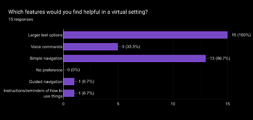
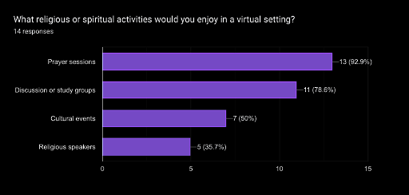
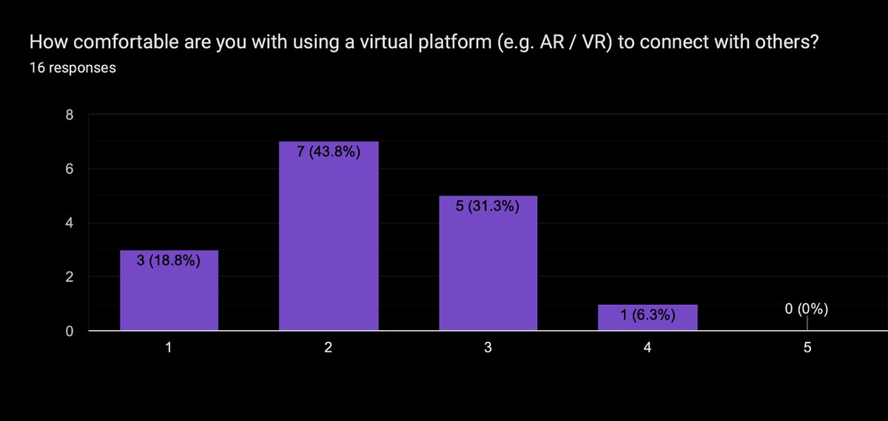
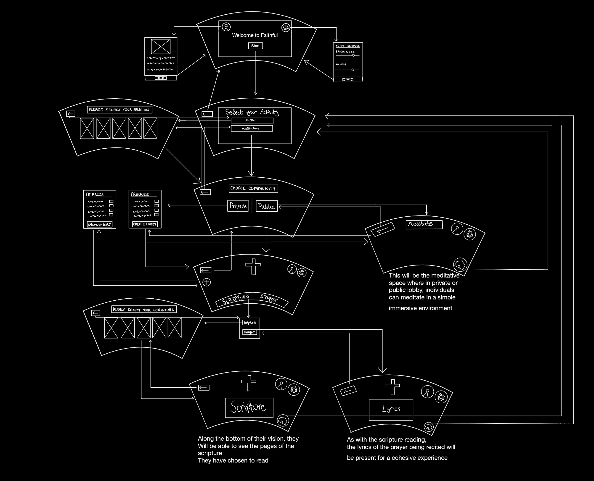
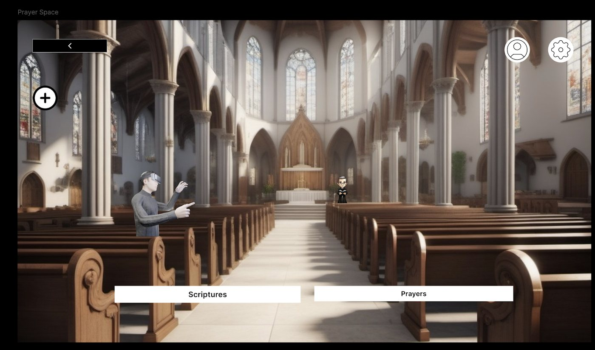
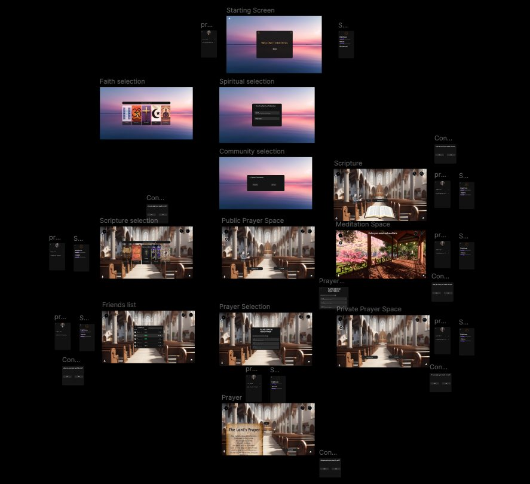

Group coursework · Human–computer interaction
A user-centred design project on social isolation among adults aged 65 and over — taking a culturally familiar virtual environment from pencil storyboard to an evaluated high-fidelity prototype, with every design decision traced back to a requirement.
Loneliness among older adults is compounded by the things that cause it. Reduced mobility and chronic health conditions make travel hard, and the places that would offer community — a church, a temple, a mosque — are exactly the places that require travel.
The National Institute on Aging links sustained isolation to cognitive decline and depression, and Pew's global data shows religiosity rising with age. Faith spaces are where a large share of this group finds connection, and they're the spaces becoming least reachable.
VR removes the travel barrier. It also introduces a new one: a head-mounted display, controllers, and a spatial interface, aimed at a group with the least exposure to any of it. Our own survey confirmed the tension — a clear majority of respondents rated themselves at the bottom of the comfort scale for virtual platforms.
That tension defined the project. Every design decision from that point was a trade between what the environment could do and what a first-time user could be asked to learn.
Secondary research set the direction; the questionnaire decided the priorities. Neither alone would have been enough — papers tell you what matters in general, respondents tell you what matters here.



Every respondent wanted larger text, and 86.7% wanted simple navigation — the two most requested features were both about reducing effort, not adding capability. Voice commands came third at 33.3%, driven by respondents describing conditions that limit dexterity.
Prayer sessions and discussion groups dominated the activity question at 92.9% and 78.6%. That ranking is why the prototype leads with Scriptures and Prayers as its two primary actions and treats everything else as secondary.
Consolidated from the literature and the questionnaire, then prioritised. The priority column is what settled arguments later — when two design options conflicted, the higher-priority requirement won rather than the better-argued opinion.
| ID | Requirement | Type | Priority |
|---|---|---|---|
| R1 | Accessible, user-friendly interface for easy navigation | Functional | HIGH |
| R2 | Voice command options for those with limited dexterity | Functional | MEDIUM |
| R3 | Choice of religious or cultural environments — temple, mosque, church | Functional | MEDIUM |
| R4 | Scheduling for prayer sessions and group discussions | Functional | LOW |
| R5 | Privacy controls for users who prefer solitary activity | Functional | LOW |
| R6 | Interfaith and same-faith gathering options | Non-functional | HIGH |
| R7 | Personalised space preferences — colours, symbols | Functional | HIGH |
| R8 | Connection with nearby users for localised gatherings | Non-functional | HIGH |
| R9 | Feedback mechanism for continuous improvement | Functional | MEDIUM |
| R10 | Data privacy and security meeting ethical and legal guidelines | Non-functional | HIGH |
The first iteration was a hand-drawn storyboard establishing the journey rather than the interface: a user puts on a headset at home, lands on a welcome screen, selects their faith, chooses a public or private lobby, picks a scripture, and finds themselves in a prayer space with others reading the same text.
The wireframe below encodes something the storyboard couldn't. Each frame is drawn curved, because a headset display wraps around the field of view rather than sitting flat — element placement at the edges behaves differently to a monitor.
Arrows between frames make every transition explicit, which is how gaps surface early: a screen with no return path is obvious on paper and expensive to discover in a build.
Three icons appear on every frame from this stage onward — back, settings, profile. Fixed position, fixed meaning. The fourth was added later.

The first high-fidelity iteration turns the wireframe into a rendered environment: a church interior with pews and ambient light, chosen because familiarity was the mechanism the research identified. Dark backgrounds with sharp contrast reduce visual strain, and the interface holds two primary actions — Scriptures and Prayers — with everything else demoted to persistent corner icons.


Brightness, volume and text-size sliders live behind the settings icon on every screen, satisfying R1, R2 and R8 without putting controls in the user's field of view during a prayer session.
Public and private lobbies split from a single Community selection, covering R4, R5 and R6 through one decision point rather than a settings menu the user would have to find.
Feedback on the first prototype surfaced a navigation complaint: returning to activity selection meant pressing back repeatedly, which is tedious in a headset and worse when you're several screens deep inside a prayer reading.
A home icon solved it in one action. It also introduced a failure mode — in VR, an accidental click has no undo and drops you out of a session you may have been in with other people.
So the home icon shipped with a confirmation dialog. That pairing is the part of this project I'd point at: a usability fix evaluated for the new risk it creates rather than declared finished once the original complaint went away.
We evaluated against Nielsen Norman's usability heuristics, adapted for an immersive context. The adaptation matters: on a desktop, an accidental click costs a moment; in a headset, the user can't glance away to reorient, so error prevention and system status carry far more weight than the original desktop framing implies.
| Heuristic | Finding |
|---|---|
| Visibility of system status | Transitions into Prayers lack confirmation — add auditory cues |
| Match with the real world | Passed — familiar terms and a recognisable church setting |
| User control and freedom | Sliders have no reset — add "Reset to default" |
| Consistency and standards | Passed — fixed icon positions across all screens |
| Error prevention | Confirmation dialog before exiting to the main menu |
| Recognition over recall | Passed — visible labelled icons throughout |
| Flexibility and efficiency | Voice commands added without extra visual complexity |
| Error recovery | No guidance when something fails — add plain-language prompts |
| Help and documentation | No onboarding — add a short first-run tutorial |
Auditory confirmation on section transitions. A reset-to-default control for brightness and volume. Plain-language error messages. A brief onboarding tutorial for first-time users.
Each traces to a specific heuristic failure rather than a preference, which is the point of using a framework instead of a design review.
It's an expert inspection method. It reliably surfaces violations of known principles, and it cannot tell you whether a 70-year-old who has never worn a headset can complete a prayer session unaided. Those are different questions, and we only answered the first.
Between 14 and 16 people answered the questionnaire, and they were not, for the most part, the 65+ adults the system targets. We designed from research about older adults rather than research with them.
That's the honest limitation, and it's the first thing I'd change. Nielsen's own work suggests around five participants surface the majority of usability problems — five older adults in a think-aloud session with the prototype would have been worth more than another twenty survey responses from a convenient sample.
Other open problems. Voice control assumes reliable recognition, which degrades with strong accents and speech impairments — precisely the users it was introduced to help. Spatial comfort in VR needs testing for sensory overload and motion tolerance, particularly with a group unfamiliar with the medium. And the security model, while specified, was never stress-tested.
What the project did teach is the shape of the discipline: gather requirements before designing, prioritise them explicitly, prototype at the cheapest fidelity that can answer the question, and evaluate against a framework rather than an opinion.